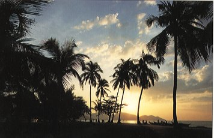
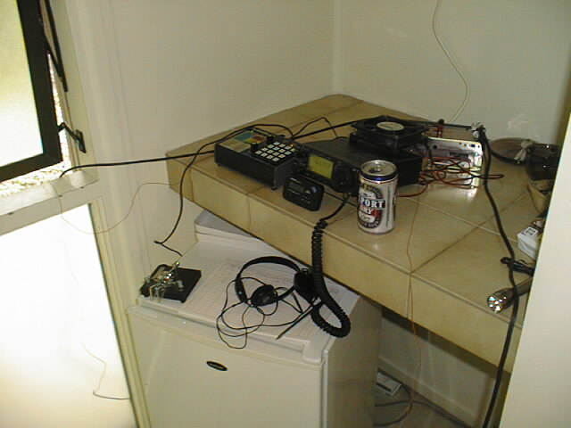
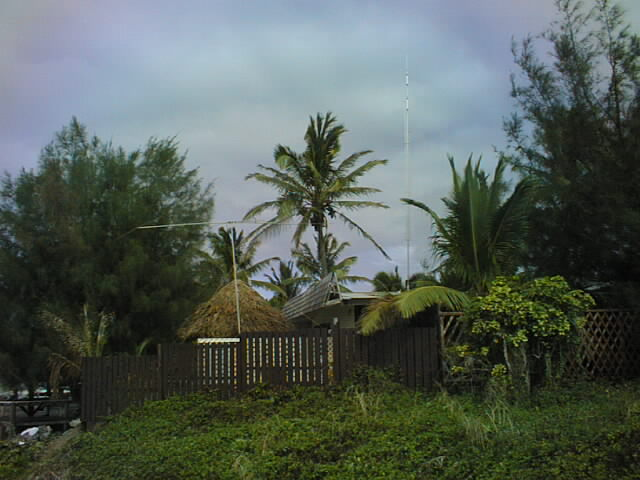
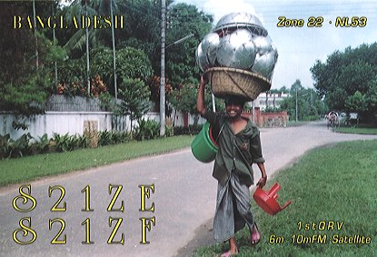
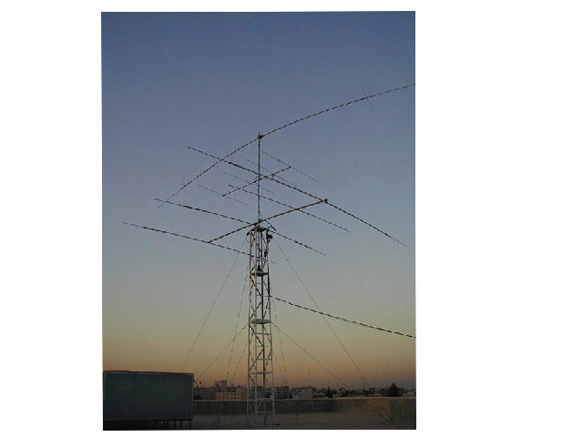
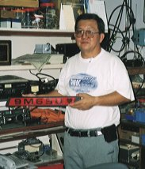

6m Today

Malaysia
このリポートは 1エリアの入感状況です
全国版50MHz DX Clusterも参考にして下さい
TIME:UTC(JST-9:00)
【Back Issues Oct.99】
31.Oct.99
(12:00i)
T33CW 23:38- 50.109 CW UP3
T33CW 00:20 50.109 CW UP3 good signal
PU3WPA 01:10 50.110 SSB
ZL-TV 01:40- 45.24/25/26--
VK-TV 01:40- 46.172/240 --
V73SIX 02:35 50.014 CW Beacon
V63HJ 02:50 50.120 SSB
ZL2KT 02:53 50.120 SSB
V73AT 02:57 50.114 CW
KH6HME 03:04- 50.061 CW Beacon
KH6HI 03:06- 50.065 CW Beacon
KH7L 03:19 50.125 CW/SSB SC 120
KH6IAA 03:37 50.110/115 SSB SC 120
V63HJ 03:59 50.120 SSB
9M-TV 04:00- 48.240/260 --
DU-TV 04:00- 48.250 --
(KH2/JR8PPG 06:14 50.103 SSB JA2-)
VK4WDM 06:22 50.110 SSB
VK8RAS 06:20- 50.047 CW Beacon
VK6RSX 06:20 50.304 CW Beacon
DU-TV 06:20- 53.750 -- TV-Audio
VK4ABW 06:35 50.110/150 SSB
DU1/N1WLV 06:40 50.130 SSB
VK4DUG 06:47 50.110/130 SSB
VK4FNQ 06:50 50.110 SSB
9V1JA 07:36 50.085 CW
VK4BRG 09:06 50.110 SSB Not Beacon
VK4JH 12:03 50.110 CW
◎ 今日の南米は01:00z過ぎに弱いPU3WPAが短時間入感しただけ。 T33CWは早い時間帯から聞こえて来た
が、T33側での受信状態が良くないのか相変わらず応答率は悪い。
"T30/T33 DXpedition 1999"のログサーチがあるのでQSOに不安のある方はSearchしてQSOの確認をした
方が良い。T33の運用は11月2日までの予定。
◎ 弱い信号ながら夕方に入感していた9V1JAは、50.085MHzのCW、50.115MHzのSSBのスポット指定の免許
でQRVしている。 JST-245D(50W)に55m高！の"アパマンアンテナ"(ミニマルチ・APA-50)での運用。
運用期間は9月15日から11月15日と、来年の3月1日から4月20日。
[お知らせ]◎ 11月1日から11月7日までの"入感リポート"の更新は休止します
 年内(1999年)に6mを運用するDX-Pedi 年内(1999年)に6mを運用するDX-Pedi
[Feedback]
(時期的にJAから伝搬があると思われるもの)
** KH4/W4ZYV(Midway Is) 22.Sep-(3.Months) HF & 6m OP.W4ZYV [QSL Home QTH]
* PY0FM(Fernando 17.Oct-01.Nov HF & 6m OP.PY5CC [QSL via JA1VOK]
de Noronha)
*** T30(Westrn Kiribati) 19.Oct-11.Nov HF & 6m OP.DL/DJ Group Call=T30CW & T30Y
[QSL via DL7DF]
** T33(Banaba Is) 28.Oct-02.Nov HF & 6m OP.DL/DJ Group Call=T33CW & T33Y
[QSL via DL7DF]
*** YJ8(Vanuatu) 29.Oct-05.Nov HF & 6m OP.VK4BKM.VK4FI [QSL via VK4JSR]
**** 9M6JU(East Malaysia) 01.Nov-07.Nov 6m & WARC OP.JA1RJU [QSL Home QTH]
*** KH0(N.Marianas) 05.Nov-11.Nov HF & 6m OP.JK7TKE [QSL Home QTH]
* PY1+++/PP1(Frances Is) 02.Nov- HF & 6m OP.PY1NEZ.PU1NEZ.PY1LVF.PY1NEW
(IOTA SA-067) 50.110/080MHz [QSL PY1 Bureau]
+ HC(Ecuador) 30.Nov-14.Dec HF & 6m OP.NE8Z(HC1MD/HC7) [QSL via K8LGJ]
[解説] ****=確実！ ***=まず大丈夫！ **=難しいがもしかしたら？ *=沖縄なら？ ＋=参考
|
30.Oct.99
(14:00j)
LU3EMK 22:08 50.110 SSB
*CE-FM 22:08- 47.90/48.30 FM
CX3HI 22:10 50.110/100 SSB
LU5JAU 22:23 50.115 SSB
CX3IN 22:36 50.130 SSB
ZL-TV 23:30- 45.24/25/26 --
V73SIX 23:40 50.014 CW Beacon
T33CW 00:00 50.109 CW UP3
T33CW 02:00 50.109 CW UP3
V63HJ 03:50 50.120 SSB
KH6SX 03:54 50.110 CW
NH6YK 04:07 50.110/125 SSB
V63AO 05:47 50.120 SSB
YJ0DX 05:46 50.115 SSB
VR2LC 07:36 50.110 CW
DU1/N1WLV 08:09 50.125 CW
VK6JQ 10:03 50.110 CW
9M6CT 10:08 50.110 SSB
◎ 今日の南米は昨日に比べ弱く、短いオープン。東方面からのパスは太平洋に面した地域が断然有利。
◎ T30Y、T33Y、9M8R、9M6NA、9M2TO、KH7R、KH4/W4ZYV、JY9NX、etc...6mにアクティビティーのある局
も今週末はコンテスト(CQ WW DX Contest phone)参加で6mは"お休み"。日本時間11月1日・09:00JSTまで。
29.Oct.99
(14:00i)
CX4II 23:49 50.110 SSB
LW3EBJ 23:52 50.100 CW
LU2FFD 23:54 50.130/160 SSB
LU6DRV 23:58 50.140 SSB
LU2FFD 00:08 50.120/125 SSB
LU3EMK 00:12 50.110/115 SSB
*CE-FM 00:15- 47.900 FM
T33CW 00:19 50.109 CW UP3
LU7FOJ 00:25 50.150 SSB
LW5EJU 00:25 50.125 SSB
*CE-FM 00:36- 48.300 FM
LU2FFD 00:53 50.110 SSB SA F.OUT
*9M-TV 00:55- 48.240/260 --
*ZL-TV 01:00- 45.24/25/26--
T33CW 03:20 50.109 CW Loud !
V73SIX 04:00- 50.014 CW
V63HJ 04:43 50.120 SSB OP & QSL JE1LES
*DU-TV 06:00- 48.250 --
*BY-TV 06:00- 49.750 --
9M8R 06:37 50.110 SSB
9M6CT 07:04 50.110/118 SSB Loud
9M6NA 07:40 50.125/115 SSB
VK6RSX 09:20- 50.304 CW Beacon
(FR1GZ 11:07 50.110 SSB JA2)
VK4RIK 12:00- 52.445 CW Beacon
9M6CT 12:16 50.115 SSB
VK6JQ 12:18 50.115 SSB
9M6NA 12:25 50.105/120 CW/SSB
VR2XMT 12:30 50.110/150 SSB
DU1/N1WLV 13:15 50.125 SSB/CW
VR2XRW 13:20 50.140 SSB
DU67HBC 13:22 50.195 SSB
VR2IL 13:25 50.130 SSB
◎ 1エリアでは"久しぶり"にまともな南米入感となった。 JA2エリアでQSOを始めた南米の信号が1エリ
アでもQSO出来るようになったのは00:00zを過ぎてから。 オープンしていたのはグリット・ロケーター
(G.L)がGF05のBuenos Aires付近。最近の南米の局はG.Lを送ってくる局が多くなったが、長ったらしい
QTHを送られるよりは"位置"が判って便利ではある。しかし、"聞き取れない"からとパイルアップの中で
何度も繰り返し送らなければならないものでもない。 "クイックQSO"の妨げになるのでG.Lは送らないで
ほしいとコメントしている南米の局も居る。
◎ Austral Isから運用していたFO0KOJ・福井さんは日本時間の29日午後でQRTした。6mでのQSOは28日
が最後となった。最終的なQSO数は6mが1641QSO、14Entity、HFが2944QSOだった。
28.Oct.99
(13:00f)
(PU3WPA 23:30- 50.107 SSB JA2.3)
*ZL-TV 00:00- 45.24/25/26--
(PU3WPA 00:06 50.110 SSB JA2)
(LU2FFD.LU8MB.LU9EHF 00:20- SSB JA5.8)
*9M-TV 00:20- 48.240 --
*CE-FM 01:00- 47.900 FM
*VK-TV 01:30- 46.172 --
VR2ZNY 01:40 50.110 SSB
T33CW 01:47 50.109 CW
V73SIX 02:20- 50.014 CW Beacon
FO0KOJ 03:15 50.115 CW/SSB
KH6SX 03:45 50.110 CW
T88GN 08:00 50.110 SSB
V73AT 08:28 50.110 CW
◎ 朝の南米はJA2、3エリアからPY、JA5、8エリアからLUがリポートされていたが、1エリア(西東京近郊)
では、01:00z頃に47.900MHzのFM局が短時間上昇しただけで、南米の信号はいずれも確認出来なかった。
01:45z頃から入感したT33CW(Banaba Is)は、T30に続く今日からのQRVだが、T30に比べ信号は弱い。
T33からのQRVはT33JS、T33RDに続いて3度目となるがJAからのQSOは意外に難しい。 11月2日までの運用。
27.Oct.99
(15:00e)
*ZL-TV 00:00- 45.24/25/26--
*DU-TV 00:00- 48.250 --
V73SIX 00:00- 50.014 -- Beacon
*VK-TV 00:30- 46.172/240 --
*ZL-TV 00:50- 50.740 FM TV Audio
ZL3NE 01:04 50.110/100 CW
*9M-TV 01:30- 48.240 --
VK4LR 03:19 50.110 SSB
VK4BLK 04:38 50.110 CW
VR2IL 04:55 50.110 SSB
V63AO 06:50 50.120 SSB
◎ 西日本でPYの入感がリポートされていたが、午前中のコンデションは最近になく低調。 01:00z頃から
上昇したZLも今日は長続きしなかった。 午後は関東地方も低気圧の影響で"雨ノイズ"と"雷ノイズ"の荒れ
模様の天候。 昨夜160mにQRVしたFO0KOJ・福井さんは66局とQSOしたとの事。
26.Oct.99
(12:00f)
*ZL-TV 22:00- 45.24/25/26--
*VK-TV 00:00- 46.172/240 --
V73SIX 00:00 50.014 CW Beacon
*ZL-TV 00:35- 50.750 FM TV Audio
ZL2WNB 00:38 50.110 SSB
ZL2TPY 00:39 50.110/105 SSB
ZL3NE 00:49 50.110/100 SSB/CW
FO0KOJ 01:30 50.115/110 CW/SSB
A35SO 01:46 50.102 CW
VK2FHN 01:49 50.100 CW
FK8CA 01:50 50.110 CW
VK2BA 01:58 50.110 SSB
VK2VC 02:13 50.110 SSB
VK2DN 02:43 50.110 SSB
VK1VP 02:55 50.110 SSB
VK4NW 02:59 50.110 SSB
VK4TVI 03:05 50.110 SSB
VK8RAS 03:30- 50.047 CW Beacon
VK4RGG 03:30- 50.058 CW Beacon
VK4BRG 03:30- 50.077 CW Beacon
VK4ABP 03:30- 52.346 CW Beacon
VK4JM 03:36 50.112/110 SSB
*9M-TV 04:00- 48.240/260 --
VK2YH 04:10 50.110 SSB
VK4KAC 06:42 50.110 SSB
DU3NXE 06:53 50.118 CW
HL5XF 07:00 50.118 CW
VK6RSX 09:23 50.304 CW Beacon
VK4WTN 09:51 50.110 CW
◎ 午前中の南米は"かすり"もしなかったが、久しぶりにZL2/3が強力に入感した。VKの入感エリアも少し
ずつ足が伸び、VK1/2エリアが良く聞こえる様になってきた。 これで朝方のZLとVK3/7など奥が聞こえる
様になればロングパスの可能性も出てくるのだが。
◎ Austral Is.のFO0KOJは今日も良く聞こえていた。既に6mでは1,600QSOを超え、DXCCのEntityも、昨
日の5W1SAとのQSOを加え14となった。残念ながら同じ南半球に位置するVK/ZLやLU、PYなどの南米の南部
とはパスが無くまだ未交信との事。 FO0KOJ・福井さんの運用は10月28日(現地時間)までとなっているが、
時差の関係でQRTは日本時間の10月29日となる。
尚、今日(26日)の10:00-16:00zに160mにトライするので、"耳"に自身のある局は聞いてほしいとの事。
100Wに逆Ｌ(一波長)アンテナで運用する。周波数は1.826MHz。
25.Oct.99
(14:00f)
(T30Y 21:52- 50.110 SSB JA7.8)
(KH4/W4ZYV 21:56 50.110 SSB QSO JA7WSZ 53/55 SC.130)
(KH6HME 22:00 50.061 CW Beacon JA7)
*VK-TV 22:10- 46.240 --
*CE-FM 22:20- 47.900 --
*ZL-TV 23:40- 45.260 --
*9M-TV 01:00- 48.240/260 --
*ZL-TV 01:00- 45.24/25/26--
*BY-TV 01:00- 49.750 --
V73SIX 02:20- 50.014 CW Beacon
VK4LR 02:35 50.110 SSB
VK4RGG 02:37- 50.058 CW Beacon
A35SO 02:41 50.110 SSB/CW
VK4NW 02:50 50.110 SSB
VK4TVI 02:52 50.110/120 SSB
T30CW 03:01 50.110/109 CW
V73AT 03:05 50.110 CW
VK4WTN 03:26 50.110 SSB
VK4BLK 03:59 50.110 SSB
FK8CA 04:18 50.110 CW
VK4DMI 05:08 50.110/130 SSB
VK4KJL 05:41 50.110 SSB
VK4BRG 05:43- 50.077 CW Beacon
VK4ABP 05:43- 52.346 CW Beacon
VK4AFL 06:10 50.110 SSB QSO with KH6
VK4KR 06:39 50.110 SSB VK4's QSO with KH4/W4ZYV
FK1TK 07:17 50.110/120 SSB
V73AT 08:33 50.110 CW
VK6RSX 09:57 50.304 CW Beacon
VK6JQ 09:59 50.110 CW
◎ 今朝は、22:00z過ぎに47.900MHzのFM局(CE)が上昇し南米のオープンが期待されたが10数分でフェー
ドアウト。 この時間帯にJA7WSZ・浜名さんがKH4/W4ZYV(Midway)とQSOしたほか、"T30"の入感もJA7、8
からリポートされている。
1エリアでは早い時間帯から45-49MHz帯のTVが上昇していたものの、50MHz帯でDXが入感してきたのは、
02:00zを過ぎてから。 沖縄では相変わらず午前中にPYがオープンしている。
24.Oct.99
(14:00h)
LU3EMK 22:17 50.110 SSB
T30CW 23:22 50.110/108 CW UP5
LW3EBJ 23:34 50.110 CW
FO0KOJ 23:36 50.124 CW
LU3EMK 23:38 50.110/144 SSB
(CX1CCC 23:44 50.120 SSB)
LW4DIR 23:50 50.160 CW
LU6DLV 23:53 50.125 SSB
FO0KOJ 00:05 50.123 SSB
*VK-TV 06:00- 46.172 --
*9M-TV 06:00- 48.240/260 --
*BY-TV 06:00- 49.750 --
V73SIX 06:10- 50.014 CW Beacon
VK8RAS 06:10- 50.047 CW Beacon
VK4BRG 06:10- 50.077 CW Beacon
VK6RSX 06:12- 50.304 CW Beacon
VK4ABP 06:12- 52.346 CW Beacon
9M2JKL 06:26 50.106 CW CQ
9M2/JI1ETU 06:29 50.085 CW
VK4BY 06:32 50.130 SSB
VK4CLM 06:35 50.120 SSB
DU3NXE 06:35 50.114 CW UP2
VK4BLK 07:18-35 50.110 SSB QSO with KH4/W4ZYV
(VK4GPS.VK4BKM.VK4KGP.VK4APG.VK4TZL ↓
VK4PU.VK4JSR.VK4GV.VK4YPM.VK4AR) ↑
VK8GF 08:01 50.120 SSB
V73AT 09:45 50.110 CW
(JY9NX 11:30 50.107/065 CW JR6=Okinawa)
VK6JQ 12:16 50.110 CW
◎ 22(07JST)時台の南米(LU)は"駆け足"で通り過ぎたが、23時台の入感は比較的安定に入感していた。
途中でT30CWが出てきて、50.110MHz付近は南米とQRMとなり"混乱"。 すっかりT30の"呼び周波数"にされ
てしまった感のある50.115MHzを避けて、FO0KOJ(Austral Is.)は50.123-124付近でQRVしていた。
◎ 昨夜は沖縄とQSOしている弱いJY9NX(ヨルダン)の信号が、東日本の一部でも短時間ながら240-250度方
向のスキャッターで入感していた。 JY9NX・田原さんのリポートでは、昨夜のオープンで10局の沖縄とQSO
出来たとの事。 昨夜は沖縄の信号も強いものではなく、残念ながら本土の信号は1局も確認出来なかった
との事。 田原さんは今日もJA向けの"運用スケジュール"でJR6(沖縄)とのQSOに成功した。
周波数と時間は次の通り。
送信周波数：50.065MHz 10:30z-11:30z
受信周波数：50.061MHz
ビーコン：50.104MHz 05:45z-
23.Oct.99
(15:00j)
*CE-FM 21:55- 47.900 -- weak
LW6EUQ 21:55 50.110 SSB
LU2FFD 22:05 50.106 SSB
(21:17-22:10 LU7FA.LW4HBN.LU9EHF.CX4II.etc)
(23:00-23:45 PU3WPA.PY3BAM)
*VK-TV 23:30- 46.172 --
*ZL-TV 23:30- 45.24/25/26--
FO0KOJ 00:05 50.115 CW
T30Y 00:46 50.110 SSB UP5-10 QSL via DL7DF
A35SO 01:25 50.130 SSB
V73SIX 01:30- 50.014 CW Beacon
T30CW 02:18 50.110 CW UP5
VK4DO 02:31 50.110 SSB
VK4JH 02:50 50.110 SSB
(KH7L 03:05 50.140 SSB)
9M-TV 03:10 48.240 --
T30CW 03:40 50.110 CW
V73AT 04:58 50.110/115 CW
V63AO 05:27 50.120 SSB
DU3NXE 07:37 50.104 CW
V85HG 07:50 50.120 SSB
DU1/N1WLV 07:57 50.130 SSB
VK6RSX 08:36 50.304 CW Beacon
VK4BRG 08:37 50.077 CW Beacon
JY9NX 11:00-15 50.065 CW weak! (10 JR6/JA's QSO)
VK6JQ 11:55 50.110 SSB
DU67HBC 12:55 50.200 SSB
VK4FNQ 13:04 50.110 SSB
◎ 早朝から南米・LUがオープンしていたが、入感時間は短く、コンデションは直ぐ西へ移ってしまった。
23:00z台の南米・PYはスポット的なオープンで西東京近郊ではほとんど聞こえていない。
昨日に引き続き入感したT30(Westrn Kiribati)はSSBがT30Y、CWがT30CWとモードによってコールを使い
分けている。 T30は50.110MHzに出てきてUP5/10のスプリットで運用しているため、50.110MHzが空いて
いると"勘違い"して、T30の"上"でCQを出すJA局がかなり見受けられた。 T30に限らずDX局はアンテナの
向きや、エリアが違うと全然信号が聞こえない事もあるので、CQを出す時には良く"ワッチ"する様心掛け
たい。
22.Oct.99
(10:00g)
*BY-TV 01:30 49.750 --
*9M-TV 01:30 48.240 --
FO0KOJ 02:00 50.115 SSB
FO0KOJ 02:15 50.115 CW
KH7L 03:37 50.110 CW
T30CW 04:15 50.110 CW
A35SO 04:30 50.110/125 SSB
FO0KOJ 04:37 50.110 CW
KH6HME 04:55- 50.061 CW Beacon
K6MIO/KH6 05:01 50.120 SSB
V73SIX 05:35- 50.014 CW Beacon
S21YJ 07:26 50.110 SSB QSL via SM4AIO
*VK-TV 08:30 46.172 --
VK4GPS 08:37 50.110 CW
VK4BRG 08:42- 50.077 CW Beacon
VK6RSX 08:42- 50.304 CW Beacon
VK8RAS 08:42- 50.047 CW Beacon
VK4RIK 08:48- 52.445 CW Beacon
9M2TO/b 08:52 50.005 CW Beacon
VK4APE 09:02 50.110 SSB
◎ 今朝の南米はJA5からPYの受信がリポートされただけ。02:00z頃から短時間、弱いFO0KOJが入感した。
午後になって南東方向のスキャッターでKH6/7がオープン、その合間にT30CW、A35SO、FO0KOJが入感。
T30CW(Westrn Kiribati)はDL/DJ(ドイツ)のグループによるDX Pediの運用だが、10月28日から11月2日
まで予定されているT33(Banaba Is)の運用日程の前後にT30から出ているもの(日程は下記の表参照)。
「DX情報」ではT30/T33とも6mのQRVは発表されていなかったが、今日のT30CWの入感で、T33からの運用
も期待出来そう。
21.Oct.99
(13:00e)
*CE-FM 23:20- 47.900 --
*CE-FM 23:40- 48.300 --
*ZL-TV 00:10- 45.24/25/26--
FO0KOJ 00:30 50.115 CW
*VK-TV 01:30 46.172 --
*9M-TV 02:00- 48.240/260 --
VK4PU 03:05 50.110 SSB
VK4LE 03:17 50.115 SSB
V73SIX 03:20- 50.014 CW Beacon
V63AO 04:40 50.120 SSB
V73AT 05:13 50.110 CW
9M2TO/b 06:35- 50.005 CW Beacon
V73AT 09:42 50.110 CW
VK8VF 12:34- 50.057 CW Beacon
◎ 1エリアでは23:20z頃から47.900MHのCE-FMが上昇、南米のオープンが期待されたがFM局は30分程で
フェードアウト。FO0KOJは00:30z頃から50.115MHzのCW入感してきたが、15分程で聞こえなくなった。
◎ FO0KOJ・福井さんは引き続きアクティブに運用している。 今朝YV4ABとQSO、初めての南米とのQSO
に成功した。 20日現在、6mでのQSO合計は1,120となった。HF帯も平行してQRVしているが、QSO数は6m
より少ないと。
◎ 10月5日から10日までSouth Cook IsからZK1NJCを運用したJI1NJC・飯塚さんからのリポートによる
と、今回のQSO数は415。初QSOは6日・02:20zのJH6NKZ、最終QSOは10日・01:41zのHP3XUGだったとの事。
使用したRigはIC-706(100W)に5ele Yagi(4mH)。 QSLはJI1NJC宛。


冷蔵庫がテーブル代わりとなっている"シャック"(左)とアンテナ
(TNX JI1NJC)
20.Oct.99
(14:00d)
FO0KOJ 23:46 50.110 CW
F00KOJ 01:02 50.115 CW/SSB
*VK-TV 01:30- 46.172 --
(PP1CZ 02.11 50.120 SSB Okinawa)
VK4LR 02:23 50.110/130 SSB
VK4TZL 02:23 50.110 SSB
VK4BLK 02:24 50.110 SSB
VK2BA 02:24 50.110 SSB
VK4RGG 02:25- 50.058 CW Beacon
VK4BRG 02:25- 50.077 CW Beacon
(PY0FM 02:29 50.110 SSB/CW JS6CDB=Okinawa)
VK2YHN 02:40 50.110 SSB
VK4NW 02:45 50.110 SSB
A35SO 03:00 50.110/120 SSB
9M-TV 03:30- 48.240/260 --
VK4APE 03:56 50.110 SSB
V73SIX 03:45- 50.014 CW Beacon
V63AO 04:00 50.120 SSB
VK4JH 04:12 50.110 SSB
(AH6TM 04:30 50.110 SSB S.C)
VK8VF 13:15- 50.057 CW Beacon
VK6RSX 13:15- 50.304 CW Beacon
◎ 沖縄でPY、PY0FM(Fernando de Noronha)がオープンした以外、今日は南米の入感は無い。
1エリアで最初に入感してきたDXはFO0KOJの50.110MHzのCW。この時間帯はアンテナが北米・南米方向に
向いているため信号は弱い。 FO0KOJが本格的に入感したのは01:00z頃からの50.115MHzのCWとSSB。
福井さんによると、今日の北米のオープンで最後まで残っていたW1とQSO、W1-W0までの全エリアとQSO
出来たとの事。
午後からの入感はV73、V63、A35、VK2/4'sと現在のオープンの"通常"パターン。
19.Oct.99
(13:00f)
*CE-FM 22:20- 47.900 FM
LU7FA? 23:17 50.110 SSB QSO with LU5JAU
(FO0KOJ 23:28 50.115 CW JA4)
*BY-TV 23:45 49.750 --
LU7FOJ 00:10 50.145 SSB
LU7FA 00:15 50.150 SSB
(LU6DPP.LU2FFD.LU9EHF.LU8EGB.PU3WPA.etc)
9M-TV 01:00- 48.240 --
DU-TV 01:00- 48.250 --
VK-TV 01:30- 46.172/240 --
VK4APG 01:43 50.110 CW
FO0KOJ 01:47 50.110/115 CW/SSB
VK4RGG 01:48 50.058 CW Beacon
VK4NW 02:00 50.110 SSB
VK2BA 02:10 50.120 SSB
FO0DEH 03:00 50.110 SSB Raivavae I(Austral Is)
A35SO 03:10 50.110/124 CW/SSB
V63AO 03:48 50.120 SSB
V73SIX 05:00 50.014 CW Beacon
V73AT 05:42 50.110 SSB/CW
9M2TO/B 08:00- 50.005 CW Beacon
BA7IA 08:06 50.110 CW
JD1YBJ 08:45 50.125 CW
◎ CEのFM局(中継局?)と言われている47.900MHzは22:40z頃に上昇してきた。00:00zを過ぎる頃からJA1、
2、9、0等からLU'sの入感がリポートされていたが、東京近郊では23:15z頃に50.110MHzでLU同士のQSOが
聞こえてきた程度で、その後は南米からの信号の確認は困難。 地域差の大きいオープンだった。
03:00z頃に50.110MHzのSSBで聞こえていたFO0DEHは、Austral IsのRaivavae島からQRVした局。 数分
でフェードアウトしたが、QSOしていたエリアはQM05、PM74、PM75など。
FO0DEHはIOTAサービスで"島巡り"をしている局だが、FO0KOJが運用している島(Tubuai Is)とはGLが東に
一つ違うGL=BG66。 QSLはON4QM。
◎ 今朝のFO0KOJ(Austral Is.)は、23:30z頃にJA4からリポートされていたが、1エリアで聞こえ始めた
のは01:45z頃から。福井さんからの連絡では、昨日(18日)のQSO数は109(JA=90)。 19日(日本時間)現在
の6mでのQSO数は1,048となった。
18.Oct.99
(14:00h)
*ZL-TV 23:00- 45.24/25/26--
*CE-FM 23:20- 47.900 FM
FO0KOJ 23:28 50.115 CW Beacon & QSO
LU2FFD 23:44 50.140 SSB
PU3WPA 23:47 50.107 SSB
*9M-TV 23:57 48.240/260 --
KH6HME 00:03- 50.062 CW Beacon FB !
V73SIX 00:06- 50.014 CW Beacon
(CX1DDO 00:13 50.117 SSB
(CX2AAL 00:11 50.115 SSB
LW3EBJ 00:14 50.100 CW
CX4AAJ 00:15 50.160 SSB
LW4DIR 00:20 50.136 CW
LU3AKW 00:22 50.119 SSB
LU3EMK 00:26 50.147 SSB
LU3HR 00:32 50.119 SSB
LU9EHF 00:40 50.115 SSB
CE3SAG 00:42 50.104 SSB
CE3XK 00:55 50.108 SSB
LU1MAF 01:00 50.130 SSB
(CE3SAD 01:05 50.115 SSB)
FO0KOJ 01:15 50.102 CW
LU8MB 01:17 50.107 SSB
LU7FOJ 01:19 50.140 SSB
LU2MHP 01:21 50.125 SSB
K6MYC 01:30- 50.105 SSB/CW GL=DM06 SC 140
LU2FFD 01:33 50.110/140 SSB
V73CW 01:36 50.125 CW
(PY0FM 01:39 50.150 CW QSO with Okinawa OP=PY5CC)
A35SO 01:43 50.120 SSB
(N6XP 01:42 50.100 CW JA3.9)
(PY2MAJ 02:31 50.135 CW)
(PY2XB 02:42 50.119 CW)
VK4JH 03:16 50.110 CW
V63AO 03:30 50.115 SSB
VK5AYD 03:31 50.120 SSB
A35ZL 03:48 50.110/120 SSB
V73SIX 05:10 50.014 CW Beacon
S21ZE 07:45 50.115 CW
VK6RSX 09:15- 50.304 CW Beacon
VK8RAS 09:15- 50.047 CW Beacon
(5B4FL 12:51 50.115 CW JR6=Okinawa)
◎ 昨日ほどではないものの今朝もFBな南米の入感で賑わった。 昨日のCXに替わって、今日はCE(Chili)
が安定に入感していた。南米が一段落した01:30z頃から南東(130-150)のスキャッターでK6MYC、N6XPな
ど北米大陸も入感。 K6MYC・Mike(GL=DM06)のSSBはフラッターを伴いながらも安定に聞こえていた。
南米と同時にダイレクトのパスで入感したハワイのKH6HMEのBeaconも強かった。
本土で北米が入感していた01:30z頃、沖縄ではPY5CCがオペレートしているPY0FM(Fernando Noronha Is)
とQSOしている。
◎ 今朝のFO0KOJ(Austral Is.)は、南米がオープンする少し前の23:28z頃から50.115MHzで聞こえてきた。
最初は"V V V..."のBeaconだったが、23:32z頃からQSOに入った。 南米が入感してから50.102MHz付近に
QSYしてCWでQRVしていたが、南米がフェードアウトする前に聞こえなくなった。
17.Oct.99
(13:00f)
*CE-FM 22:45- 47.900 FM
??-TV 22:45- 48.250 --
PU3WPU 23:07 50.108 SSB
LU5JAU 23:25 50.125 SSB
LU9EHF 23:28 50.116 SSB
(CE3RR 23:26 50.115 SSB)
CX4AAJ 23:26 50.160 SSB
LU2FFD 23:42 50.166 SSB
LW4DIR 23:35 50.155 CW
CX7BBR 23:36 50.120 SSB
CX1DDO 23:45 50.132 SSB
LU7FA 23:46 50.140 SSB
CX1CCC 23:46 50.145 SSB
LU9MA 23:47 50.135 SSB
DS5IJG 23:50 50.150 SSB
LU3EMK 23:51 50.154 SSB
LU3EO 23:54 50.130 SSB
LU8MB 23:58 50.120 SSB
CX1AO 00:00 50.128 SSB
LU4HT 00:10 50.110 SSB
LU2MUP 00:15 50.175 SSB
LU8EGB 00:16 50.190 SSB
LW3EBJ 00:17 50.100 CW
LU7FOJ 00:20 50.103 SSB
LU6DRV 00:27 50.122 SSB
CX6ACY 00:29 50.115 SSB
LU2FFD 00:35 50.180 SSB
FO0KOJ 00:40 50.115 CW Beacon & QSO
LU7FOJ 00:54 50.113 SSB
LU2NI 01:00 50.108 SSB
FO0KOJ 01:00 50.170 SSB QSX 50.190MHz
DS5YEU 01:28 50.180 SSB
9M-TV 01:30- 48.240/260 --
VK-TV 01:30- 46.172/240 --
9M2TO 01:58 50.120 CW/SSB
9M2/JI1ETU 02:00 50.135 SSB
V73SIX 02:15 50.014 CW Beacon
V73AT 02:16 50.110/105 SSB QSO? K6MYC(02:33)
KH6SX 02:29 50.110 CW
FO0KOJ 02:49 50.115 CW
VK4RGG 03:10 50.057 CW Beacon
VK2YVG 03:11 50.130 SSB
A35SO 03:25 50.100 CW
VK2KYP 03:37 50.110 SSB
VK2GJH 03:40 50.120 SSB
VK2ZXC/M 03:45 50.150 SSB
VK2PB 03:53 50.140 SSB
VK4TVI 05:50 50.110 SSB
VK2ZXC/M 05:51 50.150 SSB
V73CW 06:34 50.170 SSB 5-10UP
9M2JKL 06:35 50.107 CW
9V1UV 06:41 50.115 SSB 10UP
S21ZE 07:20 50.115 CW
4F1OZ 07:27 50.110/160 SSB
(9U5D 08:09 50.110 CW 7J6CCU & 3×JR6's=Okinawa)
VK4TVI 08:23 50.110 SSB
VK4GPS 08:27 50.100 CW
VK2YHN 08:29 50.140 SSB
VK4JSR 09:05 50.110 SSB
VK4JH 09:10 50.110/135 SSB
◎ 今季初めての本格的な南米の入感となった。 1エリアでは22:45z頃から47.900MHzのFMが入感し始め、
直後に7エリアからLU、CXの入感がリポートされた。1エリアでLUが入感してきたのは23:15z頃になって
から。 入感間もなくコンデションは急上昇、LU、PY、CXが50.100MHz-50.200MHz以上までずらりと並び、
バンドはJAのパイルアップで埋まった。 01:00z頃にはほとんど聞こえなくなったが、この日曜日の朝の
大オープンは信号も強力で、地域差も感じないFBなコンデションだった。
◎ 今朝のFO0KOJ(Austral Is.)はJAと南米がオープンしているためQRMを避け、50.170MHzでQRVを始めた。
QSXは50.190MHz。 南米がフェードアウトしてから50.115MHzに戻っているが、信号はあまり上昇しない。
JAとのオープンと前後して北米ともQSOしており、21:36zから06:00zの間にKE5CO、N0LLなどW7、9を除く
全エリア、XE、V73ATなどとQSOしている。
今日もJAと約4時間オープン、QSOが一段落した06:00z(15:00JST)現在、371 QSO(JA=306、W=63、XE=1、
V73=1)を"ログイン"したと。
16.Oct.99
(14:00h)
*ZL-TV 22:10- 45.240 --
LU9EHF 22:10 50.115 SSB
LU2FFD 22:13 50.110 SSB
LU3EMK 22:15 50.105/123 SSB
LU3DL 22:25 50.120 SSB
CX3ET 22:27 50.117 SSB
LW3EBJ 22:29 50.127 CW
CX4AAJ 22:48 50.130 SSB
FO0KOJ 00:00 50.115 CW/SSB UP5-10
*ZL-TV 00:40- 45.24/25/26--
*VK-TV 00:40- 46.172/240 --
KH6SX 01:30 50.105 CW
PY5CC 02:15 50.105 SSB
LU2FFD 02:42 50.140 SSB
*9M-TV 03:30- 48.240/260 --
*DU-TV 03:30- 48.250 --
*BY-TV 03:30- 49.750 --
VK4BLK 03:30 50.110 CW
V73SIX 03:30- 50.014 CW Beacon
V73AT 03:30 50.110 SSB
FO0KOJ 04:00 50.115/123 CW
KH6/WE8P 04:03 50.116 SSB
A35SO 04:30 50.110/120 SSB
KH6SX 04:36 50.110 CW
V63AO 04:38 50.140 SSB
VK4DO 04:42 50.110 SSB
KH0/JR1WZI 05:45 50.122 CW SC 240
S21ZE 07:18 50.115 CW/SSB
DU1/N1WLV 08:08 50.125 SSB
VK4ABW 09:36 50.110 SSB
VK6RSX 09:35- 50.304 CW
VK4ABP 09:35- 52.345 CW
VK4APE 09:37 50.110 SSB
(5R8GJ 09:10 50.110 SSB JA6.JR6=Okinawa)
VK4FNQ 10:08 50.115 SSB
◎ 今朝の南米は1エリアでは22:00z(07:00JST)頃からLU、CXが入感。相変わらず入感しているエリアは
狭く、1エリアの中でも地域差があり、10数Km先でRS59でQSOしている相手が全然聞こえないこともあっ
た。早朝のコンデションは22:55z頃に落ちてしまったが、02:30z前後に再び"弱い"PY/LUが北関東を中心
に入感している。
◎ 今日のFO0KOJ(Austral Is.)の入感は00:00z頃から始まった。昨日同様01:30z頃からのSSBの信号は強
力だった。午後からのオープンでは50.115MHz付近にハワイが出ていたため、一時的に50.123MHzでQRVし
ていた。 福井さんからの報告によると、22:37z-00:00zにかけてW5UWB(EL17)、W3XO/5、N5WSなど初めて
北米とQSO、メキシコのXE1/SM0KAK、XE1/SM0OUG、ハワイのKH7R、パナマのHP3CWDとのQSOを含め、新た
に4エンティティーとのQSOが増えたとのこと。
今日のJAとのオープンではJA8からJR6(沖縄)まで全エリアの249QSOに成功、JA以外とのQSOを含めると、
266QSOだった。 これで2日間の合計QSO数は503に達した。
FO0KOJは、00:00zまでは北米、南米方面とのQSOを狙っているので、本格的にJA方向にアンテナが向くの
は00:00z(09:00JST)以降となると。
15.Oct.99
(14:00i)
V73SIX 23:00- 50.014 CW Beacon
*ZL-TV 23:00- 45.24/25/26--
*9M-TV 00:00- 48.240/260 --
CX's 00:18- 50.100-110 SSB
(CX4OL.CX4II.CX7IY.CX3IN)
FO0KOJ 00:58- 50.115 CW/SSB
LU2MHP 01:02 50.110 SSB
LU7FA 01:30 50.130 SSB
(PY5CC 01:47 50.120 SSB)
(ZP6CW 01:52 50.107 CW)
LW4DIR 02:01 50.107 CW
FO0KOJ 02:58 50.115 SSB
KH7L 03:36 50.110 SSB
KH6SX 03:55 50.105 CW
VK1BUG 04:05 50.110/130 SSB
VK3DUT 04:06 50.110/125 SSB
VK1VP 04:06 50.135 SSB
VK2FLI 04:11 50.130 SSB
KH7R 04:12 50.110/140 SSB
HL5XF 04:27 50.120 SSB
VK2BTS 04:29 50.110 SSB
VK2HO 04:35 50.110 SSB
VK4KR 04:45 50.110 SSB
VK6JJ 04:51 50.110/160 SSB
VK4KK 04:56 50.110 SSB
VK4NW 05:14 50.110 SSB
S21ZE 05:38 50.115 CW/SSB
VK6RPH 08:00- 50.066 CW Beacon(OF78)
VR2LC 08:21 50.110 CW
BA7JG 08:39 50.120 SSB
BA7IA 08:45 50.109/150 CW
VR2DXA 09:19 50.140 CW
VK4APE 09:32 50.111 SSB
S21ZE 09:40 50.115 CW
BG7OH 09:46 50.130 SSB
◎ Austral Is.のFO0KOJ・福井さんが入感した。 １エリアで聞こえて来たのは南米がオープンを始め
た01:00z頃から。 最初50.115MHzのCWで入感してきたFO0KOJは、JAとのオープンと同時にSSBに変わり、
50.115/50.120MHzのスプリットでJAのパイルを捌いていた。
オープン時は弱かった信号も時間と共に上昇、02:00zを過ぎる頃には"ローカルなみ"に強力だった。
福井さんからの連絡では、この日がAustralからの初運用で、JAがオープンする約1時間ほど前の23:48z
にQSOしたTI7WAM/4(Costa Rica)が初QSOだったとのこと。JAとの初QSOは00:58zにCWでQSOしたJR2HCB。
今日のJAとの最後のQSOは03:25zだったが、初日のオープンの成果は10:00z現在で237(JA=226、TI=7、
HP=2、HL=2)QSOと大成功だった。
◎ 昨日は早朝からLUの入感で賑わったが、今朝1エリアで南米が入感してきたのは01:00zを過ぎてから。
これより前、西日本を中心にCX(Uruguay)のQSOがリポートされたが、1エリアでは聞こえていない。
◎ 昨日は1エリアでほとんど聞こえなかったS21ZE(Bangladesh)だが、今日は05:30z頃から強力に入感
してきた。 S21ZEはJA1UT・林さんら"IARV"のメンバー数人で10月19日まで運用される。
Bangladeshからの6m運用は、1992年10月の"S21ZE"以来今回で2度目となる。 QSLはJA1UT宛。

1992年10月に初運用された時のS21ZEのQSL
14.Oct.99
(13:00j)
??-TV 21:40- 48.250 -- strong
LU2EG 21:50 50.125 SSB
LU3DL 21:52 50.120/130 SSB
LU6DRV 21:55 50.120 SSB
LU3EMK 22:00 50.133 SSB
LW3EBJ 22:02 50.105 CW
LU9EHF 22:09 50.115 SSB
(LU's 21:50-22:15 50.100-140)
VK-TV 02:30- 46.172/240 --
ZL-TV 02:45- 45.24/25/26--
A35SO 03:05 50.110 SSB
HL2IGU 03:08 50.120 CW
V73SIX 04:00- 50.014 CW Beacon
V63AO 04:18 50.120 SSB
S21ZE 06:20- 50.115 CW/SSB weak
VR2LC 08:50 50.115 CW
VK8RAS 09:00- 50.047 CW Beacon
(5R8GJ 09:36- 50.110 SSB JR6)
(5R8GJ 10:28 50.110 SSB JA9.0)
VK8MS 12:54 50.110 SSB
VK8VF 12:55- 50.057 CW Beacon
◎ 昨日より1時間も早く南米LU'sが入感してきた。太平洋方面から48.250MHzで強力な"キャリア"が入感、
間もなくLU'sが入り始めた。 相変わらず信号はアップ・ダウンが激しく、入感している場所に地域差の
あるオープンだった。 1エリアでは22:15z(07:15JST)には48.250MHzのキャリアと共にフェードアウト、
入感時間はわずか20数分。
◎ 06:00z過ぎから50.115MHzで入感したS21ZE(Bangladesh)とのQSOは、JR6(沖縄)から始まったが、2エ
リアまで入感してきた信号も、1エリアで聞こえ出したのは約2時間後の08:14z頃になってから。
1エリアに聞こえ出した頃からスキャッター気味のパスに変わったこともあり、JA側からのコールに対する
応答は極端に悪くなった。 S21ZEは19日までの運用。
S21ZEも一段落した09:36z頃に沖縄で5R8GJ(Madagascar)とQSOしている。この後5R8GJの電波はJA9.0で
も聞こえQSO出来ている。この時新潟、石川では沖縄の信号がEs並みに強力に入感していたとのことなの
で、5R8の電波は"複合伝搬"でスポット的に届いたものとも考えられる。
13.Oct.99
(13:00-h)
LU's 22:50- 50.100-140 SSB
(LU9EHF.LU3EMK.LU3HR.LW4HBN.LU8MB
LU7FOJ.LU2FFD.etc)
LU4HE 23:19 50.108 SSB
LU5JAU 23:20 50.115/113 SSB
CX3IN 23:24 50.100 SSB
VK4ABW 00:16 50.110 SSB
LU9JH 00:28 50.110 SSB
VK4JH 00:30 50.110 CW
VK4BLK 01:02 50.110 CW
V73SIX 01:15 50.014 CW Beacon
*9M-TV 02:00- 48.240/260 --
*DU-TV 02:00- 48.250 --
A35SO 02:44 50.110/120 SSB UP5 strong
VK4NW 02:50 50.110 SSB
VK4PU 02:54 50.101 CW
VK4AFL 03:01 50.165 SSB
A35SO 03:09 50.100/107 CW CQ
VK5AYD 03:46 50.110/125 SSB
VK4BRG 03:47 50.077 CW Beacon
*BY-TV 04:00- 49.750 --
V63AO 04:35 50.120 SSB
V73AT 04:36 50.110 CW
*TV-Aud 06:40 53.740 FM TV Audio
VK6JQ 07:14 50.115/129 CW
VK4JH 08:57 50.125 SSB
VK8RAS 09:00- 50.047 CW Beacon
V73AT 09:31- 50.110 CW
P29PL 09:40 50.110 CW
DS5YEU 12:53 50.118 SSB
◎ 早朝からLU's・CXが入感。 1エリアでは23:00z(08:00JST)過ぎから上昇、23:30zに一旦フェードアウ
トした。 各エリアからのリポートを総合すると、7エリアが一番早く、22:00z台にLUとのQSOが始まって
いる。 1エリアでは23:30zにJA2以西でQSOしている相手が聞こえなくなったが、00:28zにVK4と同時に再
びLU9JHが入感してきた。この入感も2、3分後にはフェードアウト。
◎ JK7TKE(JJ1QXG)・福井さんはFO(Austral Is.)からの運用のため12日朝、成田を出発した。 日本時間
の13日にタヒチ(French Polynesia)のパペーテ(Papeete)に到着。現地到着まで不明だったコールサイン
はFO0KOJに決まった。13日はPapeeteに一泊(運用はしない)、14日にTubuai島(GL=BG56)に渡る。
FO0KOJの運用周波数は、Beaconと長時間の交信は50.115MHzを使用する。
12.Oct.99
(13:00-g)
*ZL-TV 00:00- 45.24/25/26-- weak
*VK-TV 00:00- 46.172/240 --
(AH6TM 03:36 50.110/120 SSB JA3→JR6)
(KH7L 03:40 50.110 SSB JA2→JR6)
VK4NW 03:43 50.120 SSB
VK4WTN 03:47 50.125 SSB
V73SIX 05:15 50.014 CW Beacon
9M-TV 05:15- 48.240/260 -- strong
DU-TV 05:15- 48.250 -- strong
VK4BLK 07:19 50.110 CW
VK8RAS 07:21- 50.047 CW Beacon
VK4ABP 07:22- 52.345 CW Beacon
VK4DO 07:54 50.110 SSB
VK4ABW 11:49 50.110 SSB
VK8VF 11:50- 50.057 CW Beacon
VK4RIK 11:50- 52.445 CW Beacon
VK8MS 11:59 50.110 SSB
VK4APE 12:00 50.130 SSB
◎ JR6(沖縄)ではPYの入感がリポートされているが、1エリアでは午前中の南米、太平洋方面の入感は無
かった。 00:00z頃に一時上昇していた45/46MHz帯のZL/VKのTVも01:30zには落ちてしまった。
今日は"ソラーノイズ"も上昇しており、午後から西日本でQSOしていたKH6/KH7は、1エリアではほとんど
聞こえなかった。
11.Oct.99
(13:00-f)
*ZL-TV 23:30- 45.24/25/26-- strong
*VK-TV 23:30- 46.172/240 -- strong
*DU-TV 23:30- 48.250 -- strong
V73SIX 23:45- 50.014 -- Beacon
VK4JH 23:55 50.110 SSB
V73AT 00:00 50.104 CW
VK4BLK 00:03 50.110 CW
VK4BRG 00:05 50.077 CW Beacon
VK4RGG 00:05 50.058 CW Beacon
VK4ABW 00:12 50.110 SSB
LU2FFD 00:14 50.110/120 SSB
LU7FOJ 00:20 50.115 SSB
A35SO 01:11 50.110/100 CW UP5
*9M-TV 02:00- 48.240/260 -- strong
9M2TO/B 02:16 50.005 CW Beacon strong
V63AO 04:06 50.120 SSB
V73SIX 04:07 50.014 CW again !
A35SO 08:09 50.110 CW again
3D2TC 08:32 50.110/120 SSB
VK4BLK 08:44 50.110 CW
(5R8GJ 08:35 50.110/130 SSB JA6.JR6=Okinawa)
(7Q7RM 12:58 50.110 CW JR6=Okinawa)
◎ 早朝から45/46MHz帯のVK、ZLのTVが強力に入感、南太平洋方向のコンデションの上昇が感じられた。
50.110MHzでVK4がKH6とQSOを終えた後、00:14zにVK4のCQと重なる様にLU2FFD(Argentina)が聞こえてきた。
50.110MHzはJAのパイルとなったが、LU2FFDは50.120MHzにQSY、JAを捌いていた。 1エリアでは他にLU7FOJ
が入感していたが、オープンの時間は短く00:25zには両局ともフェードアウト、コンデションは西日本に
移った。 今日のLUは、アンテナが90度の真東に近い方向からの入感で、先日オープンした時のスキャッ
ター気味の伝搬とは違い"まとも"な方向からの入感だった。
10.Oct.99
(14:00-h)
*ZL-TV 00:30- 45.240/250 -- weak
*VK-TV 02:00 46.172/240 --
KH6SX 02:31 50.110 CW weak
VK4JSR 02:49 50.110/130 SSB
VK4PU 02:58 50.110/160 SSB
VK4TVI 03:01 50.110 SSB
V73SIX 04:20 50.047 CW Beacon
*9M-TV 04:20- 48.240/260 --
9M2TO 04:30 50.118 CW/SSB
V63AO 04:32 50.120 SSB
V73AT 05:13 50.110 SSB
VR2XMT 05:43 50.110 SSB
WH7C/DU1 05:50 50.113 CW
9M2TO 07:49 50.120 CW
3D2TC 08:40 50.120 SSB
A35SO 08:58 50.110/120 CW UP5
VK4GPS 09:12 50.120 SSB
VK4ABP 09:17- 52.346 CW Beacon
VK4JH 09:20 50.110 CW
VK8VF 12:00- 50.057 CW Beacon
VK4RIK 12:00- 52.445 CW Beacon
WH7C/DU1 12:05 50.115/125 SSB
9V1UV 12:41 50.115 SSB
YC1MH 13:12 50.130 SSB
VK4ABW 13:15 50.110 CW
VK8AH 13:15 50.110 CW
◎ 9月25日に38まで落ち込んでいたSSNも、昨日(9日)は235と8月28日以来久しぶりに200の大台を超えた。
今日は更に活動が活発になっている模様で、朝から"ソラーノイズ"の高い一日となった。
南米など、長距離のDXの入感はリポートされなかったが、比較的近場の9M2、V73、V63などは同時に入感
していた。 先週以来の"ターゲット"となっている"ZKシリーズ"やFOなどの太平洋方面に加え、西方向か
らのJY9、5B4、EY8などの入感で、ワッチ時のアンテナの向きに"迷う"コンデションとなってきた。
◎ 昨日、初のJAとのQSOに成功したJY9NX・田原さんからのリポートによると、09:45z頃からビーコンを
発射、10:00z丁度に呼んできたJA6QGGがJY-JAの初QSOとなった。 10:30zにフェードアウトするまでに、
JA6、5、4など14局とQSO出来たとの事。この日のJYからのアンテナ方向は130度の東南アジア方向。JAか
らのアンテナ方向が230-240度だったので、"スキャッター気味"の伝搬だったと思われる。
5B4FL・Nickのところでは、JAの信号は09:45z頃から聞こえていたと。(TNX JY9NX)
09.Oct.99
(14:00-g)
(CX.LU/LW's 01:00- 50.110-140 CW/SSB JA7.0)
*VK-TV 02:45- 46.172 --
V73SIX 03:10- 50.014 CW
V63AO 03:21 50.120 SSB
KH6SX 04:43 50.111 CW weak
9M-TV 05:00- 48.240/260 --
V73SIX 05:18- 50.014 CW Beacon
9M2TO/B 05:20- 50.005 CW Beacon
9V1UV 06:17 50.115 SSB
9M2TO 06:29 50.117/130 SSB/CW
WH2C/DU1 06:43 50.120 CW/SSB
VK8TM 07:54 50.110/130 SSB
VK8RAS 07:55- 50.047 CW Beacon
(EY8MM 08:01- 50.110 SSB/CW JA6.JR6=Okinawa)
VK4DO 08:49 50.110 SSB
VK4JH 08:57 50.110 SSB
VK4ABW 08:59 50.110 SSB
9M2TO 09:17 50.124 SSB
(5B4FL 10:11 50.110 CW JA4.JA6)
(JY9NX 10:00 50.097 CW JA6QGG 1st JA-JY)
WH7C/DU1 11:35 50.115 CW
VK8MS 11:54 50.110 SSB
(JY9NX 12:18 50.065 CW JA5-)
VK4FNQ 13:08 50.110 SSB
◎ 週末のオープンが期待されていた南米は、01:00z(10:00JST)頃から40分程JA7、JA0に入感してきた。
この時間、1エリアではオープンの兆候もなく、JA7/JA0のスキャッターも発生しなかったため、南米の
オープンはクラスターなどにリポートされてから知った局が多かった。
この日JAとQSOしたLU6DRVは、多くのJA7/JA0が入感したとリポートしているが、JA側でオープンしてい
たのは、JA7(宮城)とJA0(新潟)の一部で、ごく狭い範囲のオープンだったと思われる。
入感がリポートされている局は次の通り。
LU9EHF.LU9AEA.LU2FFD.LW5EJU.LW6DRV.LW4DIR.LW5DXL.LW3EBJ.CX1AO
◎ JAとのQSOが待たれていたヨルダンのJY9NX・田原さんとの初QSOが成功した。
JA-JYの初QSOは10:00zに50.097MHzのCWでJA6QGGとの間で行われた。JY9NXでのJA6QGGの信号はRST559
だったとの事。 このQSOの後、JA4、JA5でもQSO出来ている。 JY-JAとのQSOは地理的に絶対的に沖縄が
有利とみられていたが、予想に反して本土(九州)が初QSOを射止めた。
このオープンと同時に5B4FL(Cypros)もJA4、JA6にオープンした。


JAとの初QSOに成功したヨルダンのJY9NX・田原さんのシャックとアンテナ
(TNX JY9NX & JR6GV)
08.Oct.99
(13:00-h)
*VK-TV 02:00- 46.172/240 --
V73SIX 03:45- 50.014 CW Beacon
VK4KK 03:56 50.110 CW
V63AO 04:25 50.120 SSB
VK4BLK 04:28 50.110 CW
VK8RAS 04:30- 50.047 CW Beacon
VK4ABP 04:30- 52.346 CW Beacon
YC1MH 06:35 50.110/130 SSB
*9M-TV 06:40- 48.240/260 --
*BY-TV 06:40- 49.750 --
9M2TO/B 06:41- 50.005 CW Beacon
A35SO 08:11 50.108/120 CW/SSB
VK4ABW 08:30 50.110 SSB
VK4JH 08:30 50.110 CW/SSB
VK4DO 09:02 50.110 SSB
VK4JUD 09:09 50.120 SSB
VK4BRG 09:15- 50.077 CW Beacon
VK4BKM 09:26 50.110 CW
VK8KTC 12:24 50.130 SSB
WH7C/DU1 12:35 50.120 SSB
◎ 一転して午前中は弱いVK-TVが聞こえるだけで、昨日南米がオープンした02:00zを過ぎても南米はおろ
かZK1の入感も無かった。 "2匹目のドジョウ"は狙えない6mのコンデションの特徴"そのまま"となった。
午後になってVK'sと共にV73SIXのビーコンが強力に入感していたが、06:00zを過ぎる頃からコンデション
は西方向に移った。 夕方からA35SOが強力に入感。
◎ ZK1NJC(S.Cook Is)は、昨日のオープンでKH6、V73を含む約250局とQSOしたとの事。明日(9日)は現在
の場所から250Km北方のAitutaki島に行く予定なので、午前中(日本時間)には運用していないと。
05:00z(14:00JST)には戻り運用を再開する予定。 10日まで運用。(TNX JF2MBF)
◎ A35ZL(DJ7RJ・Willi)は今日からZK2ZLのコールでNiue Isから運用を始めた。今のところHF帯でアク
ティブに出ているが、6mの運用も期待出来る。Williは10月14日までZK2ZLを運用、再びA35に戻る。
◎ T31(Kanton Is)の運用を終へZK3(Tokelau Is)に向かっていたグループは、8日午後からZK3DXのコー
ルでQRVを始めた。 T31で故障したと言われる「6mのRIG」が心配だが、QRVすればT31より伝搬的にQSOの
可能性は高い。
◎ 48MHz帯の9M-TVの上昇と共に9M2TO/BのBeaconが06:40z頃に入感していた。出始めの頃には送信間隔
が約50秒と長かったが、今日は17、8秒と短い間隔で送信されていた。
07.Oct.99
(13:00-g)
*VK-TV 00:00- 46.172 --
*ZL-TV 00:00- 45.24/260 -- weak
LU9AEA 02:07 50.115 SSB
LU3EMK 02:10 50.105 SSB
LW3EBJ 02:12 50.125 CW
PY5CC 02:18 50.110/115 SSB
LW4DIR 02:14 50.100 CW
ZK1NJC 02:25 50.105 CW/SSB QSX 50.135
VK4RGG 03:40- 50.058 CW Beacon
VK4BRG 03:40- 50.077 CW Beacon
VK4JH 03:42 50.110 SSB
VK4FNQ 03:44 50.110 SSB QRZ US !?
VK4BLK 03:48 50.110/130 SSB
VK2BBR 03:57 50.110/125 SSB
VK4ABP 04:00- 52.345 CW Beacon
VK4NW 04:04 50.130 SSB
VK4GPS 04:56 50.105 CW
V63AO 05:06 50.120 SSB
*9M-TV 06:00- 48.240/260 --
V73SIX 06:20- 50.014 CW Beacon
◎ 昨日と変って、ZLのTVも弱く一見コンデションが落ちているように見えたが、02:05z頃になって突然、
南米・LUが入感してきた。 数分後には50.100-50.130MHz付近はCW/SSBのパイルアップとなった。
1エリアで入感していたのは、リポートにあるようにLUとPYだったが、2エリアではCXが聞こえていたとの
リポートもある。 LU'sは開き始めの数分は強力だったが、02:15頃から弱くなり、02:35z頃まで50.100MHz
に出ていたLW4DIRのCWを最後にフェードアウトした。
1エリアでは今季初の南米とのQSOとなったが、今日のオープンはJA1、2など東日本に良かった。 JA5から
のリポートでは、この日入感していたのは弱いLW4DIRだけだったとの事。 沖縄ではこのオープンの前後
にPY's、CE3WDH、ZP5PTなどとQSOしている。
南米がフェードアウトすると同時に、50.105MHzに出ていたLU3EMKと入れ替わる様にZK1NJC(S.Cook Is.)
が入感してきた。 ZK1NJCは、昨日のオープンでKH6の4局を含め約150局(JA8を除く)とQSO出来たとの事。
06.Oct.99
(14:00-i)
*VK-TV 00:30- 46.172/240 --
*ZL-TV 01:30- 45.24/25/26--
VK4RGG 02:40 50.058 CW Beacon
VK4KJL 02:44 50.110 SSB
VK4NW 02:45 50.110 SSB
ZK1NJC 02:43 50.105 CW/SSB QSX 50.135MHz
A35SO 02:48 50.110/120 SSB QSX UP5
VK4BLK 02:55 50.110 CW
V73SIX 03:00- 50.014 CW Beacon
A35TR 03:09 50.195 SSB OP(Tanaka) & QSL 7M1FCC
VK2QF 03:16 50.107 CW
ZK1NJC 03:30 50.105 CW
*9M-TV 04:30- 48.240/260 --
V63AO 05:15 50.120 SSB
ZK1NJC 06:06 50.105 CW Beacon & QSO
VK8RAS 09:17- 50.047 CW Beacon
VK4BLK 09:18 50.110 SSB
VK4ABP 09:30- 52.346 CW Beacon
VK4BRG 09:34- 50.077 CW Beacon
P29PL 09:45 50.110 CW/SSB
9M6SU 12:55 50.110/120 SSB
VK4ABW 13:32 50.110 SSB
◎ 午前中(01:00z)に沖縄からZD8VHF(Ascension I)のビーコンの入感がリポートされていたが、1エリア
ではこの時間帯にはZL-TVが強力に入感していただけ。 この後、沖縄ではPY'sとのQSOが行われている。
南太平洋方面のコンデションは上昇していてA35SO、A35TRが強力に入感していた。
初めて入感したA35TR(OP.7M1FCC・田中さん)は、40mのロングワイヤーにIC-706MK2Gでの運用だったが、
こちらも強力に入感していた。田中さんはA35から3日間運用した後、3D2にQSYすると。QSLはHome QTHへ。
◎ 10月5日から始まったZK1NJC(S.Cook Is)は、02:30z頃から入感してきた。聞こえているエリアに地域
差があり、1エリアでの入感状況はあまり良くなかった。 A35SOがまだ強力に入感している04:00zにはZK1
の信号は聞こえなくなってしまった。 A35→ZK1の距離は東西に1,000Km程度だが、コンデションの差は大
きい。その後06:05z頃から再びZK1NJCの"VVV"のBeaconが強力に入感、06:50zからQSOが始まった。

最近6mにアクティブにQRVしている9M6SU・Donald
05.Oct.99
(13:00-g)
*VK-TV 01:00- 46.172 --
A35SO 01:45 50.110 CW/SSB
V73SIX 02:45 50.014 CW Beacon
VK4BLK 08:59 50.110 SSB
VK8VF 11:15- 50.057 CW Beacon
VK8MS 11:56 50.110 SSB
◎ 昨日に比べコンデションは落ち込んでいる。 A35SO、V73SIXのビーコンが入感していたが、時間は短
い。 沖縄では今日もPYがオープンしている。
午後になってハワイからFO0DEH(Austral Is.)とのQSOがクラスターにリポートされた。 08:06zにQSO
したKH7Rが初QSOと思われるが、KH6IAA、K6MIO/KH6等もこの局とQSOしている。QSLはON4QM(本人？)。
Austral Isは今月14日からJK7TKE(JJ1QXG)・福井さんが運用を予定しているので、JAからのQSOはこちら
が本命。
◎[1988年の記録]
10月1日のこのコーナーで「1988年秋の南米の初入感」の件を掲載しましたが、その後JF3KQA・柿元さ
ん、JR2HCB・水谷さんなどから、それ以前の記録のある事が報告されました。 再度、当時の資料を調べ
て見たところ、それ以外にもオープンの記述されているメモが手元にありました。
柿元さんからはロングパスで初めて9H1BTが入感した10月9日の午後に、西日本でPYとのQSOが記録されて
いるとのご指摘でした。 同日の資料を調べてみたところ「12:30-13:00JST頃にPY2ZS、PY2BBL、PT9...
にJA2がパイル...」と記載されています。 JA2から西の局がPYとQSOしているのが東からのスキャッター
で1エリアにも入感していた事が記されています。
同じく水谷さんからは10月8日のCE3BFZ(10:39JST)、PY2ZS(10:42JST)とのQSOが報告されました。
この結果、この日が「サイクル22」での初の南米入感かと思われたのですが、更に調べてみると、9月28
日に1エリアでPY2BBL(11:00JST)とQSOしている記録が出てきました。 この日は9月23日からQRVを始めた
5H1HK(タンザニア)と沖縄のJR6HI・知花さんとの初QSOも行われており、コンデションはかなり上昇して
いたことが伺われます。
沖縄の記録によってはJAでの入感日が早まる可能性もありますが、今回は"本土"でのQSO記録として理解
して下さい。 調査不足から"記録"が2転、3転してお粗末な話しとなりましたが、改めて検証してみるの
も必要な事と感じています。 記録では10月11日にもLU'sが西日本で入感していますが、この日の1エリア
では、07:29頃から聞こえたKX6BA(現V73)だけだった様です。
柿元さんの資料によると西日本での当時の入感状況は次の通りでした。
1988.10/09 12:18-13:09JST PY2BBL.PY2ZS.PY2AA(B).PY2AMI(B)
1988.10/11 07:35-08:12JST LU3EX.LU7FA.LU6DLB.LU5EJX.LU9EHF
11年前の"再来"となるか、今週末が楽しみ。
04.Oct.99
(14:00-l)
*VK-TV 01:00- 46.172/240 --
VK4DUG 01:50 50.110/130 SSB
VK4APG 02:17 50.115 CW
V73SIX 02:45 50.014 CW Beacon
VK4TVI 02:58 50.110 SSB
V73AT 03:13 50.110 CW
*9M-TV 03:44- 48.24/25/26--
VK2QF 03:46 50.110 CW
V73JK 06:49 50.110 SSB
V73JK 06:58 51.000/020 FM Good Sig !
V63AO 07:09 50.120 SSB
VK8MS 13:26 50.110 CW
◎ 昼前後にVK4/VK2/V73が入感していたが、コンデションは早めに南西方面に移ってしまった。 午後か
ら48MHz帯のTVが異常に強力で、このバズが50MHz帯の下まで入り込んで来ていた。
最後のチャンスとなったT31は、午前中にT31Kが28MHzのSSB、T31Tが21、28MHzのCWにQRVしていたが、昼
前に両局とも聞こえなくなった。 QRTのアナウンスは無いが、運用予定は今日まで。尚、T31Kが昨日QSO
したVKは、VK4FNQ(03:24z)だったと。
◎ 10月2、3日に強力に入感していた9M6NA・中村さんのこの2日間での総QSOは392局(デュープを除く)だ
った。2日はCWだけで190局、3日はCW/SSBで202局。 内訳はCWが263局、SSBが125局。 JAの他にはHL1LTC、
VQ9QM。 9M6NAでは19m高の7MHz用のアンテナ(AFA40)を使用してのQSOだった。
03.Oct.99
(13:00-e)
*VK-TV 02:00- 46.172 --
A35ZL 02:43 50.110/120 SSB QSX UP5-10
VK4PU 03:06 50.110 CW
VK4NW 03:27 50.110 SSB
VK4DUG 03:30 50.110 SSB
A35SO 03:55 50.100 CW
*9M-TV 04:00- 48.240/260 --
9M2TO/B 04:09 50.005 CW Beacon
VK4JH 04:35 50.110 CW
9M2TO 05:10 50.116 CW/SSB
9M6NA 06:20 50.115 CW
9M6NA 08:36 50.115 SSB
◎ 昼前からA35ZLが50.110MHzのSSBで強力に入感。 50.120MHzにQSY後はスプリットでJAのパイルを捌い
ていた。 03:53zにA35SOのCWと交代。
このA35がオープンしている最中に、JAから24.935MHzでQRVしていたT31Kにブレーク、周波数を指定して
6mの運用を"要請"したが、残念ながらこの時間帯は6mでのT31は確認出来なかった。 その後のT31からの
情報では、今日はT31からVKとはQSO出来たがJAの信号は聞こえなかったと報告されている(05:00z現在)。
02:57zに"この周波数"でリポートを送ってQSO?していた局もいたが、相手が誰だったのか定かではない。
T31からの運用予定は10月3日までだったが、1日半延長される事になったと。
04:00z頃から、強さは昨日ほどではなかったが9M2TO、9M6NAが良く聞こえていた。
02.Oct.99
(13:00-g)
*VK-TV 02:40- 46.172 --
VK4NW 03:28 03:28 SSB
VK4BRG 03:29 50.077 CW Beacon
VK4BLK 03:32 50.110 SSB
KH7L 03:35 50.110 CW
A35SO 03:39 50.110/120 CW
VK4TVI 03:57 50.110 SSB
V63AO 04:08 50.140 SSB
VK4JSR 04:23 50.110 SSB
V73SIX 04:45 50.014 CW Beacon
VK4ABW 04:46 50.110 SSB
*9M-TV 05:00- 48.240/260 --
V73AT 05:31 50.110 CW
9M6NA 05:59 50.115 CW
9M2TO/B 06:00- 50.005 CW Beacon
◎ 昼過ぎからコンデションが上昇、VK4と共にKH7(ハワイ)の信号が入感。 50.110MHzのCWで出ていたKH7L
は南東方向からのスキャッターだったがビームはブロード。03:40z頃からこのKH7の上でA35SOがCQを出し
てきた。 今日も最初から信号は強力だった。この時間帯には沖縄でPY5CC、LU3EMKなどとQSO出来ている。
今日のコンデションなら確実にオープンするはずのT31は、残念ながら聞こえなかったが、HF帯でアナ
ウンスされた情報では、6mのビーコンを出していたT31TのRigが壊れてしまい、6mはQRV出来なくなってい
ると。 SSB専用にQRVしているT31K側でも6mは運用出来るので、残る1日はこの局から6mを運用する可能性
も残されている。
◎ FO(Austral Is.)からの運用を予定しているJK7TKE(JJ1QXG)・福井さんのスケジュールが変更になった。
同島での滞在期間が前に1日、後半に4日間延長され、最終的な運用期間は10月14日から10月28日。
今秋のコンデションがいま一つ上がっていない現在、運用期間の延長によりQSOのチャンスも拡がった。
01.Oct.99
(14:00-h)
*VK-TV 00:30- 46.172 --
A35SO 03:30 50.110/100 CW/SSB
*ZL-TV 04:00- 45.240/260 --
VK4ABW 04:36 50.110 CW/SSB
VK4JH 04:40 50.110 CW/SSB
V73SIX 05:10- 50.014 CW Beacon
*9M-TV 07:00- 48.240 --
9M2TO/B 08:25- 50.005 CW Beacon FB!
*VK4JH 09:14- 50.110 CW
VK8VF 12:00- 50.057 CW Beacon
VK4RIK 12.00- 52.445 CW Beacon
P29NB 12:16 50.110 SSB
VK4WDM 12:24 50.120 SSB
VK8MS 12:26 50.110 SSB
9M6SU 12:53 50.151/115 SSB
YC1MH 13:03 50.115 SSB
YF1OO 13:21 50.115 SSB
◎ TongaのA35SO・Klausが今日は1エリアにも初めて"まとも"に聞こえてきた。8エリアを除く全エリア
がQSOしていたが、オープンの時間は僅か40分程度だった。
サイパンのレンタル・シャックからQRVしているKH0/JN1WTK・黒崎さんからのリポートによると、05:20z
現在、サイパンからハワイ(KH6/7)が強力にオープンしていて、K6MIO/KH6やAH6TMなどとQSO出来ている
との事。 夕方に9M2TOのビーコンが入感していた。 20Wに5/8・GPの信号は強力だったが、送信と送信の
間隔が約50秒と離れているので、ダイヤルを早く動かしていると聞き損なう恐れがある。
◎ 今朝はKH6/7と南米間の"大オープン"がリポートされていたが、結局、期待されていたJA本土からの
9月中の南米とのQSOは無かった。
前のサイクル22では、今年と同じSSNが100程度に上昇した1988年10月9日に、ヨーロッパの9H1が初め
てロングパスで入感している。 この日の午後に西日本を中心にPYが入感、これがサイクル22初の南米と
のQSOとなった。 11日にも西日本を中心にLUが入感したが、1エリアではKX6BAが07:29JST頃から聞こえ
てきただけだった。 1エリアでは10月12日に入感したLU3EX、LU8AHW、LU9AEA、CX1DDO、CX6DHなどとの
QSOがサイクル22初の南米となった。(この"記録"の項に付いては10月5日を参照)
翌1989年の春(2月25日)も南米がオープン、サイクルのピークとなった3月から4月にかけて南米、北米、
ヨーロッパからカリブ海方面がオープンして賑わった。この年の秋も10月に入ってから再び北米、ヨー
ロッパ、カリブ海方面が入感している。 1990年の春は引き続きFBなコンデションが続いた。この年の秋
は、9月29日にCXが初オープンした後、10月に入ってロングパスのヨーロッパと南米、北米が11月中旬頃
まで入感した。
1991年の春は相変わらずFBなコンデションが続き、"ONE DAY WAC"も可能な勢いだった。 秋のコンデシ
ョンは9月8日のPYの初オープンから始まったが、翌1992年春まで続いたFBなサイクル22のコンデション
も、SSNが100を切った1992年の秋以降はヨーロッパ、南米、北米のオープンは無くなった。
| Index | Back Issues |
 |
最新情報へ戻る |
 Sub Indexへ
Sub Indexへ